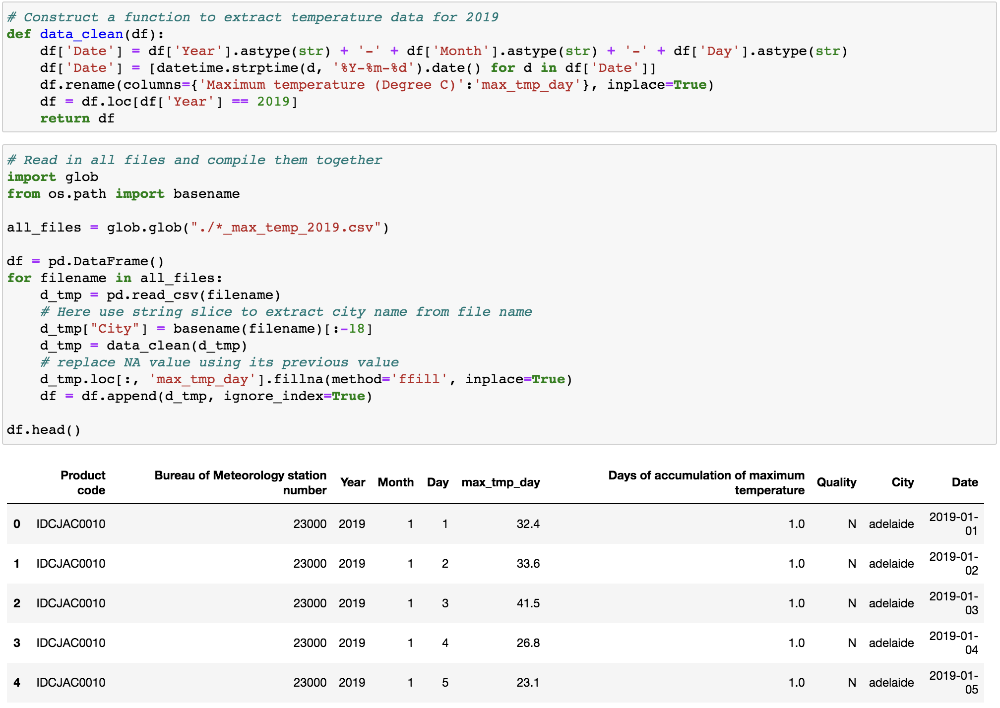
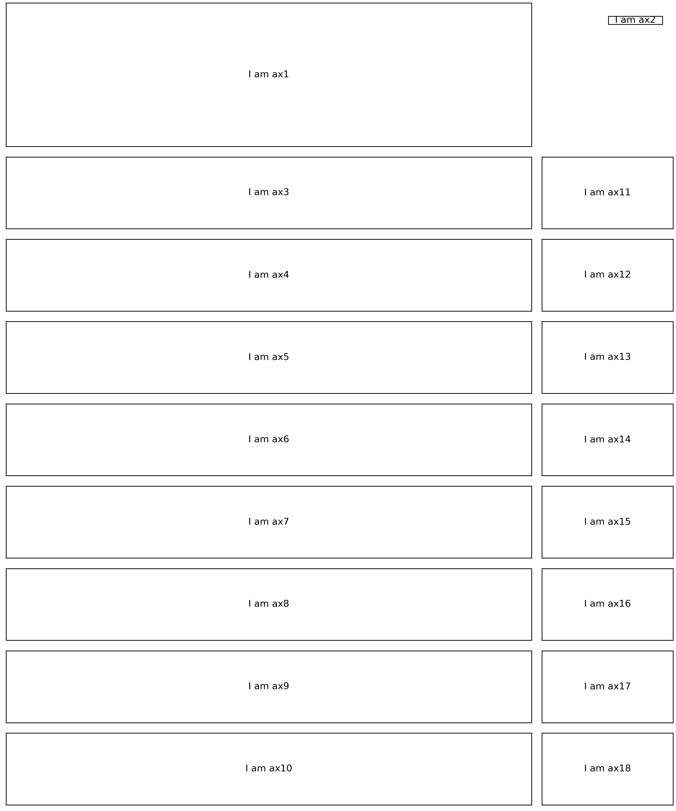
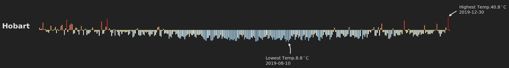

From my previous posts about the hierarchical structure of matplotlib plotting and the many ways to instantiate axes, we can see that these features render matplotlib a great potential for creating highly complex and customisable visualisations. To demonstrate this and also improve my own understanding of matplotlib, I set out to make an infographic using matplotlib this week.
An infographic generally combines visual imagery, data charts, and minimal text together. It aims to illustrate an easy-to-understand overview of a topic. Owing to this nature, its layout and content are more complicated and diverse compared to a regular static data plot, which normally exhibits one type of data in one type of plot (e.g. bar, scatter, line, and box plot or their variants). Furthermore, an infographic can be a stand-alone plot while a regular static data plot mainly serves as supplementary material and should be read within a certain context.
As you might already see the finished infographic from the heading figure, which shows the yearly patterns of daily maximum temperature and precipitation across eight Australian major cities in 2019 (I really hope you can get its topic before reading this paragraph. This makes me feel confident to proceed). My infographic was inspired by this infographic from South China Morning Post.
I personally really like to visualise large quantities of data in a grid-like structure. When the colours and shapes are set appropriately (e.g. brick red for high temperature and arctic ice blue for low temperature in my case), it starts to convey the patterns underlaid the intricacies (e.g. less arctic ice blue as latitude decreasing), while also delivers an artistic feeling (e.g. the appearance of a bunch of red bars looks like burning wood).
Alright, without further ado, let’s now dive into the code and show you how I created this infographic using matplotlib. As usual, you can access all the required data and the jupyter notebook from my Github.
Although this is not within the scope of this post, I list this section to highlight that it is the fundamental part of making an effective infographic. Only if you know what story to tell, you have a direction for gathering data and thinking about design, layout, charts, and aesthetics. As for our case, weather data is downloaded from the Australian Bureau of Meteorology website. We only need daily maximum temperature, city name and date values (i.e. max_tmp_day, City, and Date as shown in Figure 1).  ### Layout As stated in my previous post, fig.add_axes([left, bottom, width, height]) is a good way to manually place axes on fig. However, it is tedious to accurately calculate coordinates for each axes on the fig when we have lots of axes (we have 18 axes in total) and alignment is required (Our eyes are very picky, even slight misalignments will throw things off balance). I hence adopted a mixture of common layout and arbitrary layout of axes on fig. using fig.add_gridspec() and fig.add_axes(). Here, fig.add_gridspec() is a function that enable us to specify the geometry of the grid that a axes will be placed. For example, imagine a 2 rows by 2 columns grid on a fig, normally if we use fig.subplots(nrows=2, ncols=2), this will generate four axes that distributed evenly on the 2 by 2 grid. What if, on the 2 by 2 grid, we only need 3 axes that the first axes occupies the whole first row and the remaining 2 axes occupy the second row evenly? The power of fig.add_gridspec() comes in here, which enable us to create axes spanned rows and columns as desired. We can achieve the aforementioned layout as follow:
fig = plt.figure()
# Use GridSpec for customising layout
gs = fig.add_gridspec(nrows=2, ncols=2)
# Add a empty axes that occupied the whole first row
ax1 = fig.add_subplot(gs[0, 0:2])
# Add two empty axes that occupied the remaining grid
ax2 = fig.add_subplot(gs[1, 0])
ax3 = fig.add_subplot(gs[1, 1])As you can see, once a grid space object (i.e. gs) is created, we can make use of its grid geometry, just like access values from a 2D numpy.ndarray, to place axes accordingly. For instance, fig.add_subplot(gs[0, 0:2]) denotes add an axes occupied the whole first row in the 2 by 2 grid.
# Set canvas background color the same as axes
plt.rc('figure', facecolor='w')
# Arrange city based on latitude
cityList = ['hobart', 'melbourne', 'canberra', 'adelaide', 'sydney', 'perth', 'brisbane', 'darwin']
# set constrianed_layout as True to avoid axes overlap
fig = plt.figure(figsize=(10,12), dpi=300, constrained_layout=True)
# Use GridSpec for customising layout
gs = fig.add_gridspec(nrows=10, ncols=10)
# Set up a empty axes that occupied 2 rows and 10 cols in the grid for text
axText = fig.add_subplot(gs[0:2, :])
axText.annotate('I am ax1', (0.5, 0.5),
xycoords='axes fraction', va='center', ha='center')
axText.get_xaxis().set_visible(False)
axText.get_yaxis().set_visible(False)
# Add a color bar on top of axText, using figure coordinates
axInlet = fig.add_axes([0.9, 0.97, 0.08, 0.01], frameon=True)
axInlet.annotate('I am ax2', (0.5, 0.5),
xycoords='axes fraction', va='center', ha='center')
axInlet.get_xaxis().set_visible(False)
axInlet.get_yaxis().set_visible(False)
# Add axes for temperature bar plots that each occupy 1 row and 8 cols in the grid
for i, city in enumerate(cityList):
ax = fig.add_subplot(gs[i+2, 0:8], ylim=(-30, 30))
ax.annotate('I am ax{}'.format(i+3), (0.5, 0.5),
xycoords='axes fraction', va='center', ha='center')
ax.get_xaxis().set_visible(False)
ax.get_yaxis().set_visible(False)
# Add axes for rainfall that each occipy 1 row and 2 cols in the grid
for i, city in enumerate(cityList):
axRain = fig.add_subplot(gs[i+2, 8:10], ylim=(-30, 30))
axRain.annotate('I am ax{}'.format(i+11), (0.5, 0.5),
xycoords='axes fraction', va='center', ha='center')
axRain.get_xaxis().set_visible(False)
axRain.get_yaxis().set_visible(False)
plt.show()Back to the infographic, as shown in the above code, except for ax2 (the axes for the colour bar), all other axes were added by fig.add_gridspec(nrows=10, ncols=10). Specifically, on a 10 rows by 10 columns grid (Figure 2), ax1, which is the axes for the title, text and notes, occupies the first 2 rows and 8 columns. Each axes from ax3 to ax10, which are the axes for plotting temperature bar, occupies 1 row and 8 columns. Finally, each axes from ax11 to ax18, which are axes for rainfall data, occupies only 1 row and 2 columns. 
As you can see, fig.add_gridspec() is a powerful function when flexibility and alignment of multiple axes are both required.
After the layout is confirmed, we can then add data plots. Here, take the temperature bar as an example (Figure 3).  Considering both information and aesthetics, each bar represents the difference between daily maximum temperature and the yearly average temperature of these eight major cities (24.43ºC) in Celsius degree. By doing so, the audience can clearly identify days with above-average temperature (bars upward) and below-average temperature (bars downward). Otherwise, since temperature values are positive, all bars will toward the same direction above zero, which makes the bar plot boring. In addition, unlike a regular bar plot, I removed all grids, x-axis and y-axis and only left essential parts.
Another additive is the text annotation with curved arrows to point out days with highest and lowest temperature individually. This add agility to the whole infographic in terms of aesthetics. This was delivered by ax.annotate(). The official document about ax.annotate() gives very detailed examples, so I will not repeat the introduction of this function in this post.
Since the style of temperature bar plots need to be consistent for all these eight cities, we just need to come up codes for one plot and add others by a for loop (see code below).
for i, city in enumerate(cityList):
ax = fig.add_subplot(gs[i+2, 0:9], ylim=(-30, 30))
df_tmp = df.loc[df['City'] == city]
# color scheme
colors = cm.RdYlBu_r(df_tmp.max_tmp_day / max(df_tmp.max_tmp_day))
ax.bar(df_tmp.Date, df_tmp.max_tmp_day - mean_temp, label='_1', color=colors,
width=0.7, align="edge")
# annotation for highest temp.
highDate = df_tmp.loc[df_tmp['max_tmp_day'] == max(df_tmp.max_tmp_day)].Date
highTemp = max(df_tmp.max_tmp_day) - mean_temp
ax.annotate("Highest Temp.{}$^\circ$C\n{}".format(max(df_tmp.max_tmp_day), str(highDate)[-36:-26]),
xy=(highDate, highTemp), xycoords='data',
xytext=(highDate+timedelta(days=10), highTemp+5), textcoords='data',
size=6,
color='#e3e3e3',
arrowprops=dict(arrowstyle="->",
connectionstyle="arc3, rad=.3",
color='#e3e3e3')
)
# annotation for lowest temp.
lowDate = df_tmp.loc[df_tmp['max_tmp_day'] == min(df_tmp.max_tmp_day)].Date
lowTemp = min(df_tmp.max_tmp_day) - mean_temp
ax.annotate("Lowest Temp.{}$^\circ$C\n{}".format(min(df_tmp.max_tmp_day), str(lowDate)[-36:-26]),
xy=(lowDate, lowTemp), xycoords='data',
xytext=(lowDate-timedelta(days=20), lowTemp-30), textcoords='data',
size=6,
color='#e3e3e3',
arrowprops=dict(arrowstyle="->",
connectionstyle="arc3, rad=.3",
color='#e3e3e3')
)
# customise axes
ax.spines['bottom'].set_color(None)
ax.spines['right'].set_color(None)
ax.spines['left'].set_color(None)
ax.spines['top'].set_color(None)
ax.get_xaxis().set_ticks([])
ax.get_yaxis().set_ticks([])
ax.set_ylabel(city.title(), rotation=0, color='#e3e3e3', fontsize=10, fontweight='bold')Although colour scheme is a very subjective decision, I can share the principles I followed here: creating contrast, grouping elements, and encoding quantity. In this infographic, I used a dark background to make the temperature bar plot and rainfall circles visually salient. The dark background also expressed a cheerless atmosphere to reflect the emergency of extreme weather. In addition, the use of consistent colours for bar plot and rainfall circles, respectively, helped to group information together. Finally, the application of a colour spectral (from arctic ice blue to brick red) for different temperature values highlighted the patterns.
The reason that an infographic can be a stand-alone plot is that necessary text helps to reinforce its topic. Here we can use ax.text() to put whatever text wherever we want on the fig. The only pitfall I found is that it is a bit troublesome to add a custom font family to matplotlib (one solution here). An alternative is to add text via Illustrator once the main body of infographic is finished and export as svg file.
As always, I welcome feedback, constructive criticism, and hearing about your data science projects. I can be reached on Linkedin, and now on my website as well.